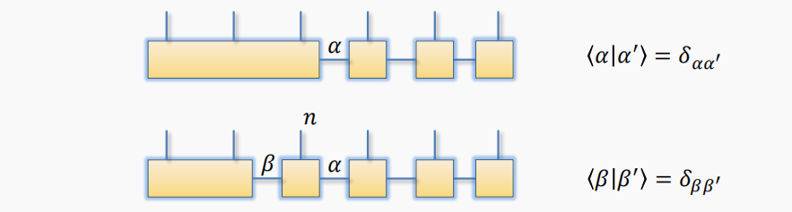
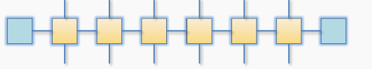
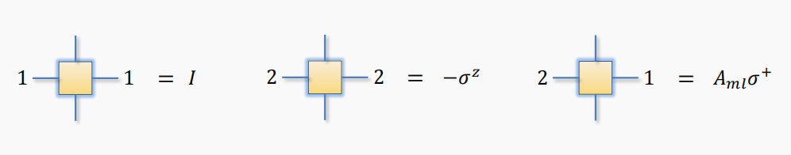
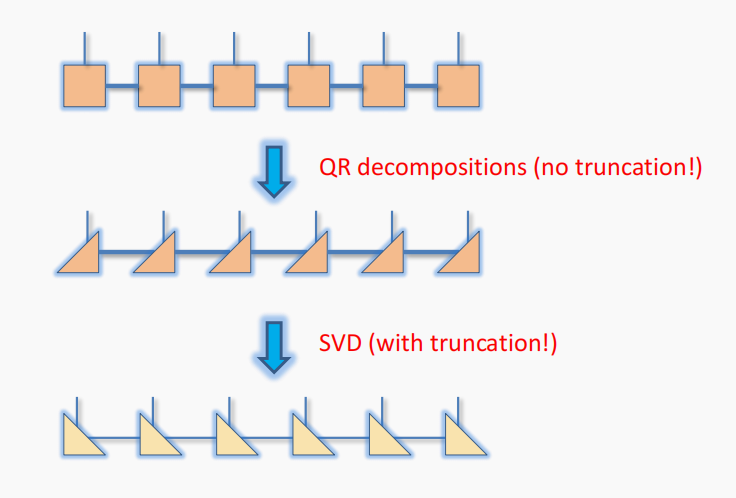
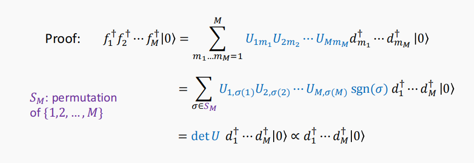
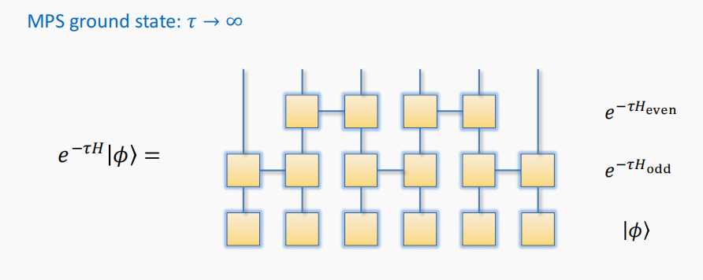

<!DOCTYPE html>


<html lang="zh-CN">
  

    <head>
      <meta charset="utf-8" />
        
      <meta
        name="viewport"
        content="width=device-width, initial-scale=1, maximum-scale=1"
      />
      <title>Lecture Notes on Fermionic Systems |  荒原</title>
  <meta name="generator" content="hexo-theme-ayer">
      
      <link rel="shortcut icon" href="/favicon.ico" />
       
<link rel="stylesheet" href="/dist/main.css">

      <link
        rel="stylesheet"
        href="https://cdn.jsdelivr.net/gh/Shen-Yu/cdn/css/remixicon.min.css"
      />
      
<link rel="stylesheet" href="/css/custom.css">
 
      <script src="https://cdn.jsdelivr.net/npm/pace-js@1.0.2/pace.min.js"></script>
       
 

      <!-- mermaid -->
      
    <link rel="alternate" href="/atom.xml" title="荒原" type="application/atom+xml">
<link rel="stylesheet" href="\assets\css\APlayer.min.css" class="aplayer-style-marker">
<script src="\assets\js\APlayer.min.js" class="aplayer-script-marker"></script>
<script src="\assets\js\Meting.min.js" class="meting-script-marker"></script>
</head>
  </html>
</html>


<body>
  <div id="app">
    
      
      <canvas width="1777" height="841"
        style="position: fixed; left: 0px; top: 0px; z-index: 99999; pointer-events: none;"></canvas>
      
    <main class="content on">
      <section class="outer">
  <article
  id="post-Lecture-Note-on-Free-Fermion-System"
  class="article article-type-post"
  itemscope
  itemprop="blogPost"
  data-scroll-reveal
>
  <div class="article-inner">
    
    <header class="article-header">
       
<h1 class="article-title sea-center" style="border-left:0" itemprop="name">
  Lecture Notes on Fermionic Systems
</h1>
 

      
    </header>
     
    <div class="article-meta">
      <a href="/2022/cl2k2tbcw0000ootsfd4r3vc4/" class="article-date">
  <time datetime="2022-04-29T06:54:42.000Z" itemprop="datePublished">2022-04-29</time>
</a> 
  <div class="article-category">
    <a class="article-category-link" href="/categories/%E7%89%A9%E7%90%86%E7%AC%94%E8%AE%B0/">物理笔记</a>
  </div>
  
<div class="word_count">
    <span class="post-time">
        <span class="post-meta-item-icon">
            <i class="ri-quill-pen-line"></i>
            <span class="post-meta-item-text"> 字数统计:</span>
            <span class="post-count">1.8k</span>
        </span>
    </span>

    <span class="post-time">
        &nbsp; | &nbsp;
        <span class="post-meta-item-icon">
            <i class="ri-book-open-line"></i>
            <span class="post-meta-item-text"> 阅读时长≈</span>
            <span class="post-count">10 分钟</span>
        </span>
    </span>
</div>
 
    </div>
      
    <div class="tocbot"></div>


  
    <div class="article-entry" itemprop="articleBody">
       
  <p>这是笔者的暑研笔记，参考为HH Tu老师的TENSOR NETWORKS (SS2021)  Lecture 10&amp;11。</p>
<span id="more"></span>

    <div id="aplayer-DxpwFXET" class="aplayer aplayer-tag-marker meting-tag-marker"
         data-id="497572729" data-server="netease" data-type="song" data-mode="circulation" data-autoplay="false" data-mutex="true" data-listmaxheight="340px" data-preload="auto" data-theme="#ad7a86"
    ></div>
<h2 id="Correlation-matrix"><a href="#Correlation-matrix" class="headerlink" title="Correlation matrix"></a>Correlation matrix</h2><p>For free fermionic system, providing $T_{ij}$ is symmetric, the generic Hamiltonian is:</p>
<script type="math/tex; mode=display">
H = \sum_{j,l=1}^{N}c_j^{\dagger}T_{jl}c_l</script><p>Diagonalizing $T_{ij}$ will give the operator $d_m^\dagger,d_m$,which is the creator/annihilator according to the energy of the mode:</p>
<script type="math/tex; mode=display">
H= \sum_{j,l=1}^{N}c_j^{\dagger}T_{jl}c_l =\sum_{m=1}^{N}\varepsilon_md_m^\dagger d_m</script><p>Selecting the negative energy mode which number is M gives the ground state:</p>
<script type="math/tex; mode=display">
|\psi \rangle = \prod_{m=1}^{M}d_m^\dagger |0 \rangle</script><p>Define the correlation matrix (correlation function in matrix form):</p>
<script type="math/tex; mode=display">
G_{lj} = \langle\psi|c_j^\dagger c_l|\psi\rangle</script><p>It has the property that the energy mode creators and annihilators diagonal the correlation matrix as follows:</p>
<script type="math/tex; mode=display">
\begin{align}
(UGU^\dagger)_{m'm} &= \sum_{j,l=1}^{N}U_{m'l}\langle\psi|c_j^\dagger c_l|\psi\rangle U^\dagger _{jm}\\
&=\langle\psi|d_m^\dagger d_{m'}|\psi\rangle
\end{align}</script><p>For general pure state, the single-particle basis which diagonalizes 𝐺 defines <em>natural orbitals</em>, which means even though the pure state is not the ground state, then there is possible that some modes(orbitals) may be not occupied.</p>
<h2 id="Calculating-the-reduced-density-matrix"><a href="#Calculating-the-reduced-density-matrix" class="headerlink" title="Calculating the reduced density matrix"></a>Calculating the reduced density matrix</h2><p>As mentioned above, for free fermions, the correlation matrix can be shown as:</p>
<script type="math/tex; mode=display">
\begin{align}
G_{lj}^A &= \langle\psi|c_j^\dagger c_l|\psi\rangle\\
& = tr|\psi\rangle\langle\psi|c_j^\dagger c_l\\
& = tr_A{}tr_B \rho c_j^\dagger c_l \\
& = tr_A(\rho_Ac_j^\dagger c_l)
\end{align}</script><p>If we diagonal the $G^A$ , we have:</p>
<script type="math/tex; mode=display">
G^A_{lj}= \sum_{p=1}^{N_A}V_{lp}^\dagger \Lambda_pV_{pj},\Lambda_p \in [0,1]\\
\Lambda_p\delta_{pp'} = \sum_{j,l = 1}^{N_A}V_{pl}G^A_{lj}V^\dagger_{jp'}= \sum_{j,l = 1}^{N_A}V_{pl}tr_A(\rho_Ac_j^\dagger c_l)V^\dagger_{jp'} = tr_A(\rho_Af^\dagger_{p'}f_p)</script><p>Meanwhile, if $p\not= p’$, then $tr_A(\rho_Af^\dagger_{p’}f_p) = 0$. What should be said is that here we defined a new set of creators and annihilators. From above, we have:</p>
<script type="math/tex; mode=display">
\Lambda_p = tr_A(\rho_Af^\dagger_{p}f_p)\\
1-\Lambda_p = tr_A(\rho_Af_pf^\dagger_{p})</script><p>From a clever perspective, we have:</p>
<script type="math/tex; mode=display">
\rho_A = \prod_{p=1}^{N_A}[\Lambda_pf^\dagger_{p}f_p+(1-\Lambda_p )f_pf^\dagger_{p}]</script><p>This expression means that for free fermion system, the reduced density matrix can be writen as some direct products of two level system.</p>
<p>If we generate state vectors using $f^\dagger$, which means$|\alpha \rangle =|n_1,n_2,\ldots,n_{N_A}\rangle$, then:</p>
<script type="math/tex; mode=display">
\rho_A|\alpha\rangle = \prod_{p=1}^{N_A}[\Lambda_pn_p+(1-\Lambda_p )(1-n_p)]|\alpha\rangle</script><p>In other words, $|\alpha \rangle$ is the eigenvector of the reduced density matrix. Here, we define the entanglement spectrum as the eigenvalues of $-\ln\rho_A$, and the entanglement Hamiltonian as $\rho_A = e^{-H}$.</p>
<p>Because of the special property of anticommutation of fermion operator we can know that:</p>
<script type="math/tex; mode=display">
\rho_A \propto \exp[-\sum_{p=1}^{N_A}-\ln(\frac{\Lambda_p}{1-\Lambda_p})f_p^\dagger f_p]=\exp(-\sum_{p=1}^{N_A}\tilde\varepsilon_p f_p^\dagger f_p)</script><p>which means zero mode indicates degeneracy in entanglement spectrum.</p>
<p>As equation (1) shown that free  fermion state created by $f^\dagger $​ is the eigenvector of the reduced density matrix, (NOTICE: the state is not necessarily to be the ground state) so The Schmidt decomposition can be computed exactly for free fermion systems.</p>
<p>If you want to calculate the entanglement entropy of the system, you can  do it via what is said above. You can also  compute the central charge of the system via entanglement entropy. (<strong>Maybe I should calculate one here.</strong>)</p>
<h2 id="MPS-for-free-fermion-state"><a href="#MPS-for-free-fermion-state" class="headerlink" title="MPS for free fermion state"></a>MPS for free fermion state</h2><p>For MPS approximation, there is two way of doing truncation for free fermion systems. The first is Gaussian truncation, and the second is SVD truncation. The former keeps the nature of Gaussian state, in other words, stay to be the free fermion states. <strong>This can be seen in the paper: M. T. Fishman &amp; S. R. White, Phys. Rev. B 92, 075132 (2015).</strong></p>
<p>As equation (1) shown that free  fermion state created by $f^\dagger $ is the eigenvector of the reduced density matrix, (NOTICE: the state is not necessarily to be the ground state) so The Schmidt decomposition can be computed exactly for free fermion systems.</p>
<p>So to write a free fermion state into MPS form require bipartitions steps, below is one example:</p>
<p></p>
<p>Any state $|\alpha \rangle $ can be written as a combination of $|\beta \rangle \bigotimes |n \rangle $:</p>
<script type="math/tex; mode=display">
|\alpha \rangle =\sum_{\beta, n}A_{\beta\alpha}^{n} |\beta \rangle \bigotimes |n \rangle</script><p>what should be claimed here is that $A_{\beta\alpha}^n$ is in a block diagonal form. Now we compute the coefficients using the results gained from correlation matrix and assuming $n=0$:</p>
<script type="math/tex; mode=display">
\begin{align}
|\alpha \rangle &= f_1^\dagger \cdots f_m^\dagger |0 \rangle_{1\rightarrow i}
=\prod_{p=1}^{m}\sum^i_{j=1}c_j^\dagger V_{jp}^\dagger |0 \rangle_{1\rightarrow i}=\prod_{p=1}^{m}\sum^i_{j=1}c_j^\dagger V_{jp}^\dagger |0 \rangle_{1\rightarrow i-1}\bigotimes |0 \rangle_i\\
|\beta \rangle &= \tilde f_1^\dagger \cdots \tilde f_m^\dagger |0 \rangle_{1\rightarrow i-1}=\prod_{p=1}^{m}\sum^{i-1}_{j=1}c_j^\dagger V{'}_{jp}^\dagger |0 \rangle_{1\rightarrow i-1}=\prod_{p=1}^{m}\sum^{i}_{j=1}c_j^\dagger \tilde V_{jp}^\dagger |0 \rangle_{1\rightarrow i-1}
\end{align}</script><p>Remember in mind, $\tilde V^\dagger$ is irreversible. As the set of $|\beta \rangle \bigotimes |n \rangle$ forms the Schmidt vectors, we have:</p>
<script type="math/tex; mode=display">
A^0_{\beta\alpha} = (\langle 0|\bigotimes\langle\beta|)|\alpha \rangle = \langle 0|\prod_{p=m}^{1}\sum^{i}_{j=1}c_j \tilde V_{jp}\prod_{p'=1}^{m}\sum^i_{j'=1}c_{j'}^\dagger V_{j'p'}^\dagger |0\rangle</script><p><strong>(Personal statement)</strong>Similarly, we can compute $A_{\beta\alpha}^{1}$, which requires different meaning of $\tilde V^\dagger$. Noticing the order of creators:</p>
<script type="math/tex; mode=display">
|\beta \rangle \bigotimes |1 \rangle = \tilde f_1^\dagger \cdots \tilde f_{m-1}^\dagger c_i^\dagger|0 \rangle_{1\rightarrow i-1}\bigotimes |0 \rangle_i =\prod_{p=1}^{m}\sum^i_{j=1}c_j^\dagger \tilde V_{jp}^\dagger |0 \rangle_{1\rightarrow i}</script><p>The following procedure ends up with the same answer. In this way we can write down the MPS form of free fermion state.</p>
<h2 id="Convert-a-Fermion-sea-into-MPS-state"><a href="#Convert-a-Fermion-sea-into-MPS-state" class="headerlink" title="Convert a Fermion sea into MPS state"></a>Convert a Fermion sea into MPS state</h2><p>According to the creators and annihilators for different eigenstates of energy modes, these operators is just a combination of that according to sites:</p>
<script type="math/tex; mode=display">
\begin{align}
d_m^\dagger &= \sum_{l=1}^{N}A_{ml}c^\dagger_l\\
& = 
\begin{pmatrix}
0    &1
\end{pmatrix}
\begin{pmatrix}
1    &0\\
A_{m1}c_1^\dagger &1\\
\end{pmatrix}
\begin{pmatrix}
1    &0\\
A_{m2}c_2^\dagger &1\\
\end{pmatrix}
\cdots
\begin{pmatrix}
1    &0\\
A_{mN}c_N^\dagger &1\\
\end{pmatrix}
\begin{pmatrix}
1\\
0\\
\end{pmatrix}
\end{align}</script><p>What should be noticed is that matrix $A$ and matrix $U$ is not the same, i.e. $A = (U^\dagger)^T = U^*$ . Here we use use Jordan-Wigner transformation to introduce a correspondence between fermion creators and spin operators:</p>
<script type="math/tex; mode=display">
c_l^\dagger = (-\sigma_1^z)\cdots(-\sigma_{l-1}^z)\sigma_l^+</script><p>In that case, we have:</p>
<script type="math/tex; mode=display">
d_m^\dagger =
\begin{pmatrix}
0    &1
\end{pmatrix}
\begin{pmatrix}
1    &0\\
A_{m1}\sigma_1^+ &-\sigma_1^z\\
\end{pmatrix}
\begin{pmatrix}
1    &0\\
A_{m2}\sigma_2^+ &-\sigma_2^z\\
\end{pmatrix}
\cdots
\begin{pmatrix}
1    &0\\
A_{mN}\sigma_N^+ &-\sigma_N^z\\
\end{pmatrix}
\begin{pmatrix}
1\\
0\\
\end{pmatrix}</script><p>So here we have successfully written the creator as a MPO. Graphically, that is as follows.</p>
<p></p>
<p>The different quantities for different indexes is as follows: </p>
<p>In a nutshell, the Fermi sea can be written in a sequence of MPO. As a consequence, the bond dimension will increase exponentially. So at some point truncation is needed. High fidelity compression requires low-entanglement “intermediate” states (This statement can be seen as the result of Jensen Inequality).</p>
<h2 id="Truncation-procedure-for-MPO-MPS-evolution"><a href="#Truncation-procedure-for-MPO-MPS-evolution" class="headerlink" title="Truncation procedure for MPO-MPS evolution"></a>Truncation procedure for MPO-MPS evolution</h2><h3 id="SVD-truncation-for-a-given-MPS"><a href="#SVD-truncation-for-a-given-MPS" class="headerlink" title="SVD truncation for a given MPS"></a>SVD truncation for a given MPS</h3><p>The truncation is a process described as follows graphically :</p>
<p></p>
<p>To understand what I’m doing here, you may consult the previous article.</p>
<a href="/2022/cl1iojk4o00006ots7mxo7fjm/" title="From Matrix Product State(MPS) to DMRG（1）">From Matrix Product State(MPS) to DMRG（1）</a>
<p>What should be stressed here is the process of QR decomposition: as we want to use SVD decomposition to maximize the approximation, we should put the MPS state in the canonical form, i.e. the state should consisted of Schmidt vectors for different blocks.</p>
<p>If you are not satisfied with the accuracy of SVD truncation, you may use DMRG to “sweep” to get a better result.</p>
<h3 id="Different-type-of-oporators"><a href="#Different-type-of-oporators" class="headerlink" title="Different type of oporators"></a>Different type of oporators</h3><p>As we mentioned above, in the process of applying the MPOs, we need <em>low-entanglement “intermediate” states</em>. For $d_m^\dagger$, it usually create the non-local particle mode. You can easily check the 1D chain of tight binding model to verify the statement.</p>
<p>Here we want to deduce more local creators using the negative energy mode, which can’t be the the initial $c_i^\dagger$ for there exist positive energy mode. We use the position operator $X = \sum_llc_l^\dagger c_l$, i.e. $X$ can give the expectation value of state’s position.</p>
<p>Construct the matrix $\tilde X_{nm} = \langle 0|d_m^\dagger d_{m’}|0\rangle$ and diagonal the matrix, we get a spectrum of position operator and a unitary matrix $U$. Then we can construct $f_r^\dagger$:</p>
<script type="math/tex; mode=display">
U\tilde X U^\dagger = diag(x_1,\ldots,x_M)\\
f_r^\dagger = \sum_{l=1}^MU_{rl}d^\dagger_l = \sum_{l=1}^N(UA)_{rl}c^\dagger_l</script><p><strong>Q: Why this represent Wannier orbitals?</strong></p>
<p></p>
<p>From what is shown in the Proof picture, we know that we can use the new operators to get a state created by the old ones up to a trivial phase factor. As a trick to suppress entanglement growth, we may use “left meet right” way instead of creating from left to right.</p>
<h2 id="Time-evolution-in-MPO-MPS-form"><a href="#Time-evolution-in-MPO-MPS-form" class="headerlink" title="Time evolution in MPO-MPS form"></a>Time evolution in MPO-MPS form</h2><p>When we discuss evolution of states, we may translate that process into MPS-MPS form. Especially for imaginary-time evolution, which is heading towards th ground state of the system.</p>
<p>For lattice model,  we may separate different part of Hamiltonian and manipulate the MPO in a sequence. For the separated parts commute with each other, we just do two steps of MPO. Notice: Here SVD(QR) decomposition is some what used.</p>
<p></p>
<p>For non-commuting case, we just divide the time evolution into small steps, just as what we do in deducing the path integral formula. This will require a long sequence of MPO.</p>
 
      <!-- reward -->
      
    </div>
    

    <!-- copyright -->
    
    <div class="declare">
      <ul class="post-copyright">
        <li>
          <i class="ri-copyright-line"></i>
          <strong>版权声明： </strong>
          
          本博客所有文章除特别声明外，著作权归作者所有。转载请注明出处！
          
        </li>
      </ul>
    </div>
    
    <footer class="article-footer">
       
<div class="share-btn">
      <span class="share-sns share-outer">
        <i class="ri-share-forward-line"></i>
        分享
      </span>
      <div class="share-wrap">
        <i class="arrow"></i>
        <div class="share-icons">
          
          <a class="weibo share-sns" href="javascript:;" data-type="weibo">
            <i class="ri-weibo-fill"></i>
          </a>
          <a class="weixin share-sns wxFab" href="javascript:;" data-type="weixin">
            <i class="ri-wechat-fill"></i>
          </a>
          <a class="qq share-sns" href="javascript:;" data-type="qq">
            <i class="ri-qq-fill"></i>
          </a>
          <a class="douban share-sns" href="javascript:;" data-type="douban">
            <i class="ri-douban-line"></i>
          </a>
          <!-- <a class="qzone share-sns" href="javascript:;" data-type="qzone">
            <i class="icon icon-qzone"></i>
          </a> -->
          
          <a class="facebook share-sns" href="javascript:;" data-type="facebook">
            <i class="ri-facebook-circle-fill"></i>
          </a>
          <a class="twitter share-sns" href="javascript:;" data-type="twitter">
            <i class="ri-twitter-fill"></i>
          </a>
          <a class="google share-sns" href="javascript:;" data-type="google">
            <i class="ri-google-fill"></i>
          </a>
        </div>
      </div>
</div>

<div class="wx-share-modal">
    <a class="modal-close" href="javascript:;"><i class="ri-close-circle-line"></i></a>
    <p>扫一扫，分享到微信</p>
    <div class="wx-qrcode">
      
    </div>
</div>

<div id="share-mask"></div>  
  <ul class="article-tag-list" itemprop="keywords"><li class="article-tag-list-item"><a class="article-tag-list-link" href="/tags/%E7%89%A9%E7%90%86%E7%AC%94%E8%AE%B0/" rel="tag">物理笔记</a></li></ul>

    </footer>
  </div>

   
  <nav class="article-nav">
    
    
      <a href="/2022/cl1lk7v4s0000cctsdsou2rgm/" class="article-nav-link">
        <strong class="article-nav-caption">下一篇</strong>
        <div class="article-nav-title">TRG代码</div>
      </a>
    
  </nav>

  
   
<div class="gitalk" id="gitalk-container"></div>

<link rel="stylesheet" href="https://cdn.jsdelivr.net/npm/gitalk@1.7.2/dist/gitalk.css">


<script src="https://cdn.jsdelivr.net/npm/gitalk@1.7.2/dist/gitalk.min.js"></script>


<script src="https://cdn.jsdelivr.net/npm/blueimp-md5@2.10.0/js/md5.min.js"></script>

<script type="text/javascript">
  var gitalk = new Gitalk({
    clientID: '3eec04363df891e1b915',
    clientSecret: '35abd6378aad4642c36f0b85318aff680997e03c',
    repo: 'comment',
    owner: 'Richard-Liu-Physics',
    admin: ['Richard-Liu-Physics'],
    // id: location.pathname,      // Ensure uniqueness and length less than 50
    id: md5(location.pathname),
    distractionFreeMode: false,  // Facebook-like distraction free mode
    pagerDirection: 'last'
  })

  gitalk.render('gitalk-container')
</script>

     
</article>

</section>
      <footer class="footer">
  <div class="outer">
    <ul>
      <li>
        Copyrights &copy;
        2021-2022
        <i class="ri-heart-fill heart_icon"></i> Richard Liu
      </li>
    </ul>
    <ul>
      <li>
        
        
        
        由 <a href="https://hexo.io" target="_blank">Hexo</a> 强力驱动
        <span class="division">|</span>
        主题 - <a href="https://github.com/Shen-Yu/hexo-theme-ayer" target="_blank">Ayer</a>
        
      </li>
    </ul>
    <ul>
      <li>
        
        
        <span>
  <span><i class="ri-user-3-fill"></i>访问人数:<span id="busuanzi_value_site_uv"></span></span>
  <span class="division">|</span>
  <span><i class="ri-eye-fill"></i>浏览次数:<span id="busuanzi_value_page_pv"></span></span>
</span>
        
      </li>
    </ul>
    <ul>
      
    </ul>
    <ul>
      
    </ul>
    <ul>
      <li>
        <!-- cnzz统计 -->
        
        <script type="text/javascript" src='https://s9.cnzz.com/z_stat.php?id=1278069914&amp;web_id=1278069914'></script>
        
      </li>
    </ul>
  </div>
</footer>
      <div class="float_btns">
        <div class="totop" id="totop">
  <i class="ri-arrow-up-line"></i>
</div>

<div class="todark" id="todark">
  <i class="ri-moon-line"></i>
</div>

      </div>
    </main>
    <aside class="sidebar on">
      <button class="navbar-toggle"></button>
<nav class="navbar">
  
  <div class="logo">
    <a href="/"></a>
  </div>
  
  <ul class="nav nav-main">
    
    <li class="nav-item">
      <a class="nav-item-link" href="/">主页</a>
    </li>
    
    <li class="nav-item">
      <a class="nav-item-link" href="/archives">归档</a>
    </li>
    
    <li class="nav-item">
      <a class="nav-item-link" href="/categories">分类</a>
    </li>
    
    <li class="nav-item">
      <a class="nav-item-link" href="/tags">标签</a>
    </li>
    
    <li class="nav-item">
      <a class="nav-item-link" href="/tags/%E7%89%A9%E7%90%86/">物理</a>
    </li>
    
    <li class="nav-item">
      <a class="nav-item-link" target="_blank" rel="noopener" href="https://www.zhihu.com/people/richard-70-58-76">知乎</a>
    </li>
    
    <li class="nav-item">
      <a class="nav-item-link" href="/friends">友链</a>
    </li>
    
    <li class="nav-item">
      <a class="nav-item-link" href="/2021/about">关于我</a>
    </li>
    
  </ul>
</nav>
<nav class="navbar navbar-bottom">
  <ul class="nav">
    <li class="nav-item">
      
      <a class="nav-item-link nav-item-search"  title="搜索">
        <i class="ri-search-line"></i>
      </a>
      
      
      <a class="nav-item-link" target="_blank" href="/atom.xml" title="RSS Feed">
        <i class="ri-rss-line"></i>
      </a>
      
    </li>
  </ul>
</nav>
<div class="search-form-wrap">
  <div class="local-search local-search-plugin">
  <input type="search" id="local-search-input" class="local-search-input" placeholder="Search...">
  <div id="local-search-result" class="local-search-result"></div>
</div>
</div>
    </aside>
    <div id="mask"></div>

<!-- #reward -->
<div id="reward">
  <span class="close"><i class="ri-close-line"></i></span>
  <p class="reward-p"><i class="ri-cup-line"></i>请我喝杯咖啡吧~</p>
  <div class="reward-box">
    
    <div class="reward-item">
      
      <span class="reward-type">支付宝</span>
    </div>
    
    
    <div class="reward-item">
      
      <span class="reward-type">微信</span>
    </div>
    
  </div>
</div>
    
<script src="/js/jquery-2.0.3.min.js"></script>
 
<script src="/js/lazyload.min.js"></script>

<!-- Tocbot -->
 
<script src="/js/tocbot.min.js"></script>

<script>
  tocbot.init({
    tocSelector: ".tocbot",
    contentSelector: ".article-entry",
    headingSelector: "h1, h2, h3, h4, h5, h6",
    hasInnerContainers: true,
    scrollSmooth: true,
    scrollContainer: "main",
    positionFixedSelector: ".tocbot",
    positionFixedClass: "is-position-fixed",
    fixedSidebarOffset: "auto",
  });
</script>

<script src="https://cdn.jsdelivr.net/npm/jquery-modal@0.9.2/jquery.modal.min.js"></script>
<link
  rel="stylesheet"
  href="https://cdn.jsdelivr.net/npm/jquery-modal@0.9.2/jquery.modal.min.css"
/>
<script src="https://cdn.jsdelivr.net/npm/justifiedGallery@3.7.0/dist/js/jquery.justifiedGallery.min.js"></script>

<script src="/dist/main.js"></script>

<!-- ImageViewer -->
 <!-- Root element of PhotoSwipe. Must have class pswp. -->
<div class="pswp" tabindex="-1" role="dialog" aria-hidden="true">

    <!-- Background of PhotoSwipe. 
         It's a separate element as animating opacity is faster than rgba(). -->
    <div class="pswp__bg"></div>

    <!-- Slides wrapper with overflow:hidden. -->
    <div class="pswp__scroll-wrap">

        <!-- Container that holds slides. 
            PhotoSwipe keeps only 3 of them in the DOM to save memory.
            Don't modify these 3 pswp__item elements, data is added later on. -->
        <div class="pswp__container">
            <div class="pswp__item"></div>
            <div class="pswp__item"></div>
            <div class="pswp__item"></div>
        </div>

        <!-- Default (PhotoSwipeUI_Default) interface on top of sliding area. Can be changed. -->
        <div class="pswp__ui pswp__ui--hidden">

            <div class="pswp__top-bar">

                <!--  Controls are self-explanatory. Order can be changed. -->

                <div class="pswp__counter"></div>

                <button class="pswp__button pswp__button--close" title="Close (Esc)"></button>

                <button class="pswp__button pswp__button--share" style="display:none" title="Share"></button>

                <button class="pswp__button pswp__button--fs" title="Toggle fullscreen"></button>

                <button class="pswp__button pswp__button--zoom" title="Zoom in/out"></button>

                <!-- Preloader demo http://codepen.io/dimsemenov/pen/yyBWoR -->
                <!-- element will get class pswp__preloader--active when preloader is running -->
                <div class="pswp__preloader">
                    <div class="pswp__preloader__icn">
                        <div class="pswp__preloader__cut">
                            <div class="pswp__preloader__donut"></div>
                        </div>
                    </div>
                </div>
            </div>

            <div class="pswp__share-modal pswp__share-modal--hidden pswp__single-tap">
                <div class="pswp__share-tooltip"></div>
            </div>

            <button class="pswp__button pswp__button--arrow--left" title="Previous (arrow left)">
            </button>

            <button class="pswp__button pswp__button--arrow--right" title="Next (arrow right)">
            </button>

            <div class="pswp__caption">
                <div class="pswp__caption__center"></div>
            </div>

        </div>

    </div>

</div>

<link rel="stylesheet" href="https://cdn.jsdelivr.net/npm/photoswipe@4.1.3/dist/photoswipe.min.css">
<link rel="stylesheet" href="https://cdn.jsdelivr.net/npm/photoswipe@4.1.3/dist/default-skin/default-skin.min.css">
<script src="https://cdn.jsdelivr.net/npm/photoswipe@4.1.3/dist/photoswipe.min.js"></script>
<script src="https://cdn.jsdelivr.net/npm/photoswipe@4.1.3/dist/photoswipe-ui-default.min.js"></script>

<script>
    function viewer_init() {
        let pswpElement = document.querySelectorAll('.pswp')[0];
        let $imgArr = document.querySelectorAll(('.article-entry img:not(.reward-img)'))

        $imgArr.forEach(($em, i) => {
            $em.onclick = () => {
                // slider展开状态
                // todo: 这样不好，后面改成状态
                if (document.querySelector('.left-col.show')) return
                let items = []
                $imgArr.forEach(($em2, i2) => {
                    let img = $em2.getAttribute('data-idx', i2)
                    let src = $em2.getAttribute('data-target') || $em2.getAttribute('src')
                    let title = $em2.getAttribute('alt')
                    // 获得原图尺寸
                    const image = new Image()
                    image.src = src
                    items.push({
                        src: src,
                        w: image.width || $em2.width,
                        h: image.height || $em2.height,
                        title: title
                    })
                })
                var gallery = new PhotoSwipe(pswpElement, PhotoSwipeUI_Default, items, {
                    index: parseInt(i)
                });
                gallery.init()
            }
        })
    }
    viewer_init()
</script> 
<!-- MathJax -->
 <script type="text/x-mathjax-config">
  MathJax.Hub.Config({
      tex2jax: {
          inlineMath: [ ['$','$'], ["\\(","\\)"]  ],
          processEscapes: true,
          skipTags: ['script', 'noscript', 'style', 'textarea', 'pre', 'code']
      }
  });

  MathJax.Hub.Queue(function() {
      var all = MathJax.Hub.getAllJax(), i;
      for(i=0; i < all.length; i += 1) {
          all[i].SourceElement().parentNode.className += ' has-jax';
      }
  });
</script>

<script src="https://cdn.jsdelivr.net/npm/mathjax@2.7.6/unpacked/MathJax.js?config=TeX-AMS-MML_HTMLorMML"></script>
<script>
  var ayerConfig = {
    mathjax: true,
  };
</script>

<!-- Katex -->

<!-- busuanzi  -->
 
<script src="/js/busuanzi-2.3.pure.min.js"></script>
 
<!-- ClickLove -->

<!-- ClickBoom1 -->

<!-- ClickBoom2 -->
 
<script src="/js/clickBoom2.js"></script>
 
<!-- CodeCopy -->
 
<link rel="stylesheet" href="/css/clipboard.css">
 <script src="https://cdn.jsdelivr.net/npm/clipboard@2/dist/clipboard.min.js"></script>
<script>
  function wait(callback, seconds) {
    var timelag = null;
    timelag = window.setTimeout(callback, seconds);
  }
  !function (e, t, a) {
    var initCopyCode = function(){
      var copyHtml = '';
      copyHtml += '<button class="btn-copy" data-clipboard-snippet="">';
      copyHtml += '<i class="ri-file-copy-2-line"></i><span>COPY</span>';
      copyHtml += '</button>';
      $(".highlight .code pre").before(copyHtml);
      $(".article pre code").before(copyHtml);
      var clipboard = new ClipboardJS('.btn-copy', {
        target: function(trigger) {
          return trigger.nextElementSibling;
        }
      });
      clipboard.on('success', function(e) {
        let $btn = $(e.trigger);
        $btn.addClass('copied');
        let $icon = $($btn.find('i'));
        $icon.removeClass('ri-file-copy-2-line');
        $icon.addClass('ri-checkbox-circle-line');
        let $span = $($btn.find('span'));
        $span[0].innerText = 'COPIED';
        
        wait(function () { // 等待两秒钟后恢复
          $icon.removeClass('ri-checkbox-circle-line');
          $icon.addClass('ri-file-copy-2-line');
          $span[0].innerText = 'COPY';
        }, 2000);
      });
      clipboard.on('error', function(e) {
        e.clearSelection();
        let $btn = $(e.trigger);
        $btn.addClass('copy-failed');
        let $icon = $($btn.find('i'));
        $icon.removeClass('ri-file-copy-2-line');
        $icon.addClass('ri-time-line');
        let $span = $($btn.find('span'));
        $span[0].innerText = 'COPY FAILED';
        
        wait(function () { // 等待两秒钟后恢复
          $icon.removeClass('ri-time-line');
          $icon.addClass('ri-file-copy-2-line');
          $span[0].innerText = 'COPY';
        }, 2000);
      });
    }
    initCopyCode();
  }(window, document);
</script>
 
<!-- CanvasBackground -->

<script>
  if (window.mermaid) {
    mermaid.initialize({ theme: "forest" });
  }
</script>


    
    <div id="music">
    
    
    
    <iframe frameborder="no" border="1" marginwidth="0" marginheight="0" width="200" height="52"
        src="//music.163.com/outchain/player?type=2&id=28923579&auto=1&height=32"></iframe>
</div>

<style>
    #music {
        position: fixed;
        right: 15px;
        bottom: 0;
        z-index: 998;
    }
</style>
    
  </div>
</body>

</html>